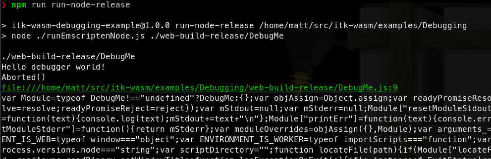

Debugging WebAssembly
Effective debugging results in effective programming. itk-wasm makes effective debugging of WebAssembly possible.
This example walks through the different techniques that can be used with itk-wasm to debug WebAssembly during development.
We will debug the following C++ code:
|
The example provides npm scripts as a convenient way to execute debugging commands that you may also invoke directly in a command line shell.
To run these examples, first install and test Docker and Node/NPM. Then, install the package dependencies and run the example commands.
cd itk-wasm/examples/Debugging/ |
where <name> is the npm script. Available names can be found by calling npm run without any arguments.
Native
The CMake-based itk-wasm build system tooling enables the same C++ build system configuration and code to be reused when building a native system binary or a WebAssembly binary. As a result, native binary debugging tools, such as GDB, LLDB, or the Visual Studio debugger.
We can build the project’s standard CMake build configuration,
cmake_minimum_required(VERSION 3.10) |
with standard CMake commands,

The native binary can then be debugged in the standard way. For example, with gdb on Linux:

WASI
The most direct way to debug WebAssembly is through the WebAssembly System Interface (WASI). In itk-wasm we can build to WASI with the WASI SDK by specifying the itkwasm/wasi toolchain image. A backtrace can quickly be obtained with the itk-wasm CLI. Or, a fully fledged debugger session can be started with LLDB.
First, build to WASI WebAssembly with debugging symbols available:

Then, the itk-wasm CLI can conveniently run the WASM binary with the included WASI runtime:

We can see that abort is called in the main function at line 13 in DebugMe.cxx.
A full debugging session is also possible after LLDB >= 13 and Wasmtime are installed.

Node.js
When debugging WebAssembly built with the itk-wasm Emscripten toolchain, set the CMAKE_BUILD_TYPE to Debug as is required to debug native builds.
As with native builds, this builds debugging symbols, the human-readable names of functions, variables, etc., into the binary. This also adds support for C++ exceptions and retrieving the string name associated with exceptions. Without this itk-wasm instrumentation, a C++ exception will through an error with an opaque integer value. And, Emscripten JavaScript WebAssembly bindings will not be minified, which facilitates debugging.
When built with the default Release build type:

the JavaScript support code is minified, and difficult to debug:

However, when built with the Debug build type:

a useful backtrace can be obtained:

In order to run a debugger with Node, add the --inspect-brk flag when invoking node:

This will pause execution on start a debugging remote interface. To connect to the remote interface with a Chromium browser, visit chrome://inspect and click the inspect link on the corresponding Remote Target:

This will open the Chrome Dev Tools debugger:

Other debugger interfaces are also available, like a CLI debugger or the VSCode debugger.
This is helpful for debugging issues that occur in Emscripten JavaScript interface. The next section describes how to debug issues inside the Emscripten-generated WebAssembly.
Chromium-based browsers
Recent Chromium-based browsers have support for debugging C++-based WebAssembly in the browser. With a few extra steps described in this section, it is possible to interactively step through and inspect C++-compiled WebAssembly running in the browser.
WebAssembly debugging in DevTools requires a few extra setup steps from a default browser installation.
First, install the Chrome WebAssembly Debugging extension.
Next, enable it in DevTools.
Open DevTools -> Click the gear (⚙) icon in the top right corner -> go to the Experiments panel -> and tick WebAssembly Debugging: Enable DWARF support.

After exitting Settings, you will be prompted to reload DevTools – reload.
Next, open the options for Chrome WebAssembly Debugging extension:

Since itk-wasm performs builds in a clean Docker environment, the debugging source paths in the Docker environment are different than the paths on the host system. The debugging extension has a path substitution system that allows to account for these differences. In the Docker image, the directory where itk-wasm is invoked is mounted as /work. Substitute /work with the directory where the itk-wasm CLI is invoked. For example, if itk-wasm was invoked at /home/matt/src/itk-wasm/examples/Debugging, then:

Build the project with itk-wasm and the Debug CMAKE_BUILD_TYPE to include DWARF debugging information:
Here we load and run the WebAssembly with a simple HTML file and server:
<html> |

And we can debug the C++ code in Chrome’s DevTools debugger along side the executing JavaScript!